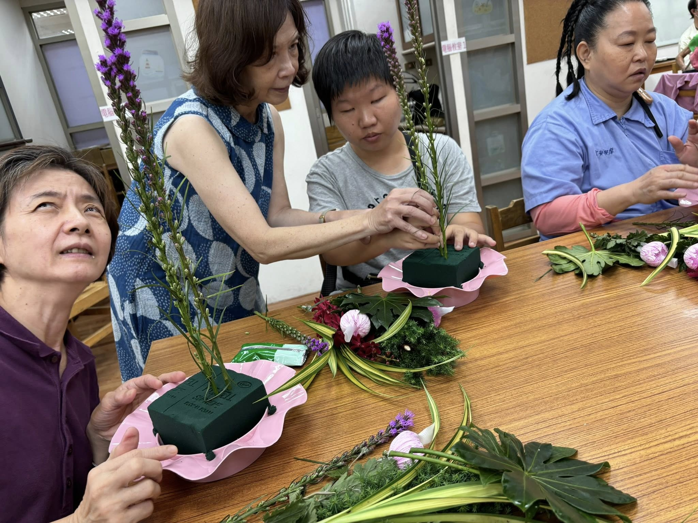
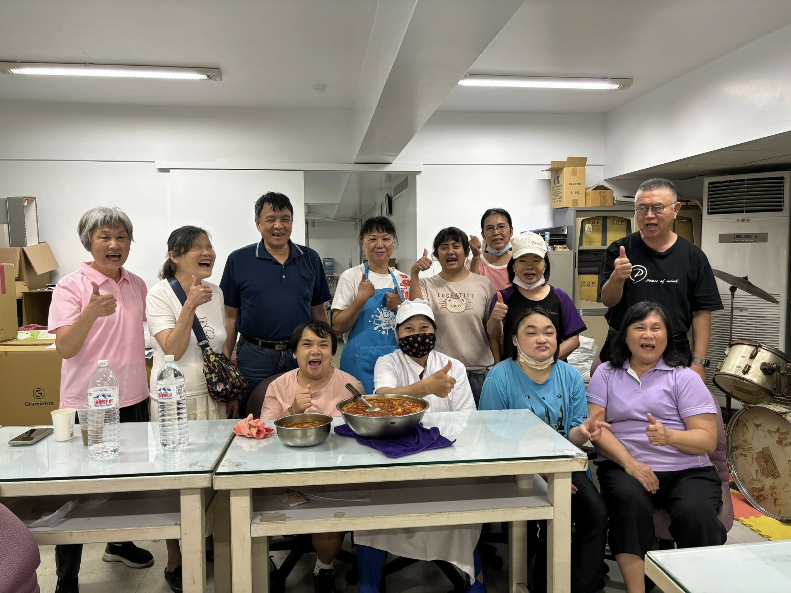
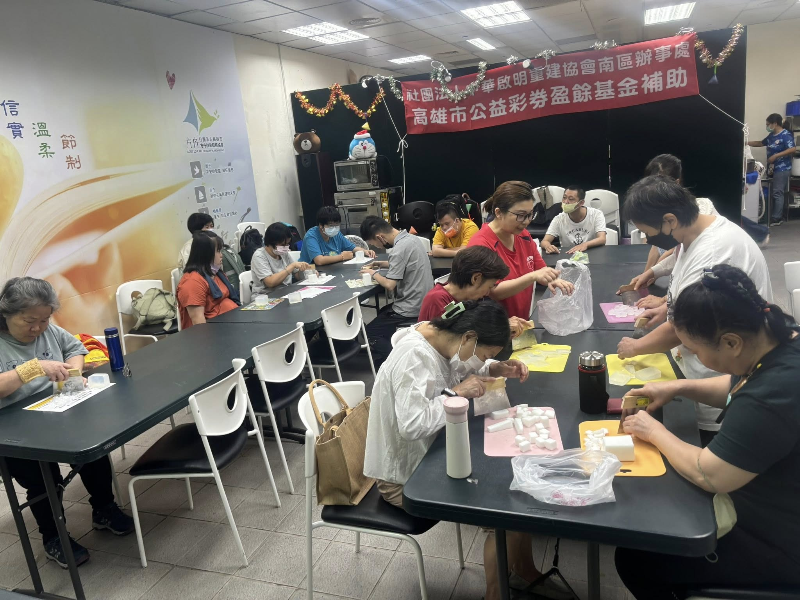
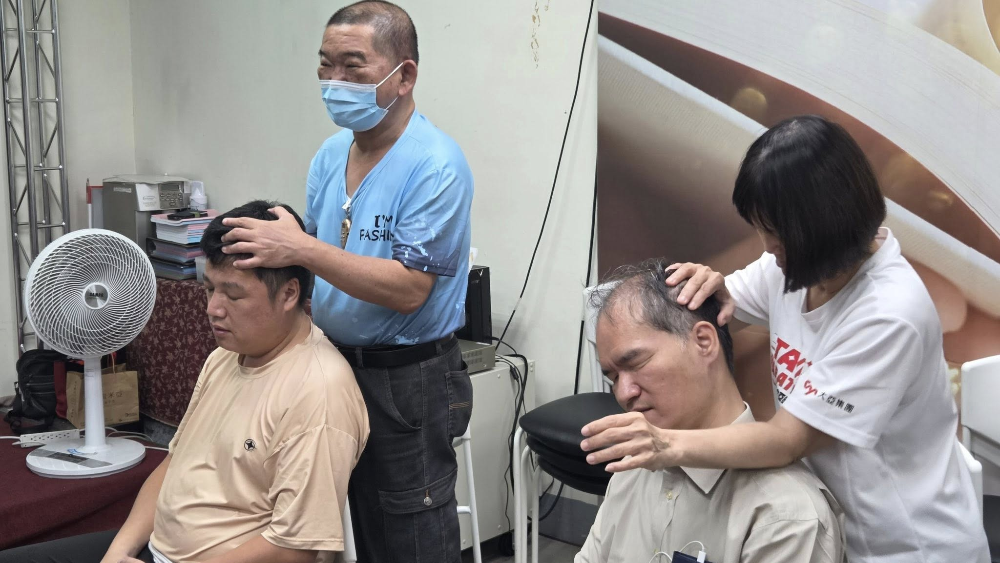

用指尖插花，為黑暗種下色彩
這不是一場視障者的挑戰秀，而是一場回歸生活感知、重拾美感的旅程。每一朵努力開出的花，都是生命中微小卻堅定的光。

看不見，卻能做出家的味道
這不是一般的烹飪課，而是一群中途失明的朋友，在鍋碗瓢盆間重新找回自信的課程。小茹重新找回家的溫度與生活的意義。

牛角撥筋，撥出新力量
透過「刮、撥、理」的手法深入筋膜，化解痠痛。這不只是技術的學習，更是他們對人生的承諾：即使看不見，也要帶來溫暖。

雙手的溫度，揉進了希望的香氣
上週六，視障朋友們參與了手工皂體驗課，用雙手「看見」自己的努力與成品，重建自信與創造的價值。

視而不見光，卻用雙手點亮世界
這是視障按摩師的在職訓練課程，每一次推壓都是重建信心與尊嚴的過程，邀請您一同支持這份努力。